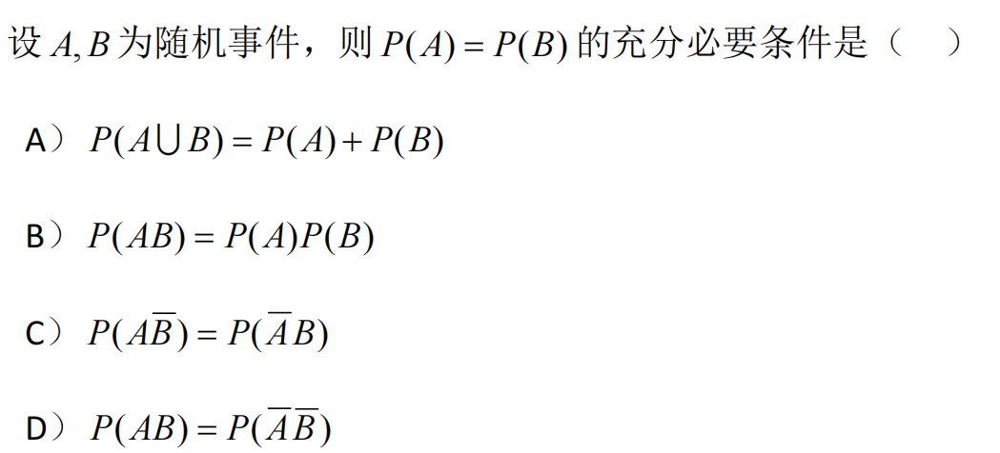
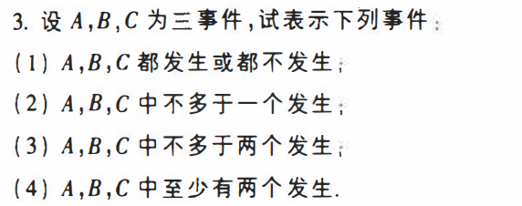
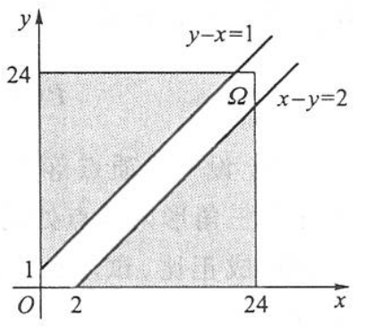

概率论期末复习习题(1)
记录一下备考时的练习题目
t1

解析
A：$P(A \cup B)=P(A)+P(B)-P(A B)$ 由此推出 $P(AB)=0$ 无法推出目标条件，错误；
B：这是事件独立的充分必要条件，无法推出目标条件，错误；
C：事件有运算关系：$A-B=A-A B=A \bar{B}$ ，所以有：
$P(A\bar{B})=P(A-B)=P(A)-P(AB)$ ， $P(\bar{A}B)=P(B-A)=P(B)-P(AB)$ 又 $P(A\bar{B})=P(\bar{A}B)$
由此推出 $P(A)=P(B)$ ，正确；
D：$P(\bar{A} \bar{B})=P(\overline{A \cup B})=1-P(A \cup B)=1-P(A)-P(B)+P(A B)$
由此推出 $P(A)+P(B)=1$ ，无法推出目标条件，错误。
《知识点总结》的 $\S1.1、1.3$
答案
$C$
t2

解析
（1）：$A B C \cup \bar{A} \bar{B} \bar{C}$
（2）：$\bar{A} \bar{B} \bar{C} \cup A\bar{B}\bar{C} \cup \bar{A} B \bar{C} \cup \bar{A} \bar{B} C$
（3）：唯一不符合的情况是 $ABC$ 同时发生，所以可以写为 $\Omega-ABC=\overline{ABC}=\bar{A} \cup \bar{B} \cup \bar{C}$
（4）：$AB\cup AC \cup BC$
有运用德摩根律，《知识点总结》的 $\S1.1$
t3
投掷3颗骰子，求以下事件的概率
（1）所得的最大点数小于等于5；
（2）所得的最大点数等于5。
解析
记 $Y$ 为所得的最大点数，则
（1）$P\{Y\leqslant5\}=\dfrac{5^3}{6^3}=\dfrac{125}{126}$
（2）$P(Y=5)=P\{Y\leqslant5\}-P\{Y\leqslant4\}=\dfrac{5^3-4^3}{6^3}=\dfrac{61}{216}$
t4
把 $n$ 个 “ 0 ” 与 $n$ 个 “ 1 ” 随机地排列, 求没有两个 “ 1 ” 连在一起的概率.
解析
$n$ 个 “ $1$ ” 的放法: $2 n$ 个位置上 “ $1$ ” 占有 $n$ 个位置, 所以共有 $\displaystyle \binom{2 n}{n}$ 种放法，这是总的放法，即分母。
“没有两个 1 连在一起”, 相当于在 $n$ 个 “ $0$ ” 之间及两头 （共 $n+1$ 个位置）去放 $1$ ，所以有 $\displaystyle \binom{n+1}{n}$ 种放法。
综上，答案为：$p_n=\dfrac{\displaystyle \binom{n+1}{n}}{\displaystyle\binom{2 n}{n}}=\dfrac{n+1}{\displaystyle\binom{2 n}{n}}$.
拓展
问：把 $n$ 个完全相同的球随机地放到 $N$ 个盒子中，有多少种情况？
答：用 $N+1$ 根火柴棒来表示 $N$ 个盒子，因为球要放到盒子中间，所以最旁边的两根火柴棒的外面不可以放球，所以自由移动的球和火柴棒的位置为 $n+N+1-2=N+n-1$ 个，挑出 $n$ 个位置放球，最终答案为：$\displaystyle \binom{N+n-1}{n}$
这个也称为排列组合里的重复组合。
t5
抽样模型：设 $N$ 件产品中有 $M$ 件是次品, $N-M$ 件是正品。现从 $N$ 件中随机地不放回地抽取 $n$ 件产品。求:
事件 $A_m=\{$ 所取的 $n$ 件产品中恰有 $m$ 件次品 $\}$ 的概率. $m=0,1,2,\cdots,n$
解析
拓展
现在为有放回地抽取，则新的概率为
t6
盒子模型：设有 $n$ 个(不同)球, 每个球等可能地落入 $N$ 个不同的盒子中 $(n \leq N)$，设每个盒子容球数不限, 求下列事件的概率：
(1) $A=$ “指定的 $n$ 个盒子中各有一球”;
(2) $B=$ “恰有 $n$ 个盒子中各有一球”.
解析
（1）$P(A)=\dfrac{n!}{N^n}$
（2）$P(B)=\dfrac{C_N^n n!}{N^n}=\dfrac{N!n!}{(N-n)!n!N^n}=\dfrac{N!}{(N-n)!N^n}$
t7
抽签模型：袋中有 $a$ 只白球, $b$ 只红球, 它们除颜色不同外，其他方面没有差别，现在把球随机地一只只摸出来, 作
（1）放回取样；
（2）不放回取样；
求第 $k$ 次摸出的球是白球的概率 $(k \leq a+b)$
解析
（1）$p_k=\dfrac{a}{a+b}$
（2）样本空间包含样本点的总数为： $P_{a+b}^k$ （排列）
第 $k$ 个球为白球事件的总数为：$C_a^1P_{a+b-1}^{k-1}$
$t5-t7$ 均为古典概型，《知识点总结》的 $\S1.2$
t8
甲乙两艘轮船驶向一个不能同时停泊两艘轮船的码头, 它们在一昼夜内到达的时间是等可能的. 如果甲船的停泊时间是 1 小时, 乙船的停泊时间是 2 小时, 求它们中任何一艘都不需要等候码头空出的概率是多少?
解析

如上图所示，记 $x$ 和 $y$ 分别为甲乙两艘轮船到达码头的时间。
则 $p=\dfrac{S_A}{S_\Omega}=\dfrac{\frac{1}{2}(23^2+22^2)}{24^2}=0.879$
$t8$ 均为几何概型，《知识点总结》的 $\S1.2$
t9
设随机事件 $A, B$ 相互独立, $A, C$ 相互独立, $B C=\varnothing$ 若$P(A)=P(B)=\frac{1}{2}, P(A C \mid A B \cup C)=\frac{1}{4}$
求 $P(C)$
解析
解得：$P(C)=\dfrac{1}{4}$
条件概率与事件独立性、还有事件之间的运算，《知识点总结》的 $\S1.1、1.3、1.4、1.5$
t10
匹配问题：某人写好 $n$ 封信，又写好 $n$ 只信，然后在黑暗中把每封信放入一只信封中, 试求至少有一封信放对的概率。
解析
记 $A_k$ 表示第 $k$ 封信放对了。
t11
已知 $P(\bar{A})=0.3, P(B)=0.4, P(A \bar{B})=0.5$, 求 $P(B \mid A \cup \bar{B})$.
解析
条件概率与事件之间的运算，《知识点总结》的 $\S1.1、1.3、1.4$
t12
$m$ 个人相互传球, 球从甲手中传出, 每次传球时, 传球者等可能地把球传给其余 $m-1$ 个人中的任何一个, 求第 $n$ 次传球时仍由甲传出的概率。
解析
关键在于利用全概率公式划分事件。
线性递推数列求解通项公式可以参考 第零篇 数列递推 | StudyinCAU
t13
盒中装有8个乒乓球，其中有6个新的。第一次练习时，从中任取2个来用，用完后放回盒中。第二次练习时，再从盒中任取2个。求：
(1)第二次取出的球都是新球的概率；
(2)在第二次取出的球都是新球的条件下，第一次取到的球都是新球的概率。
解析
（1）记 $B$ 为第二次取出的球是2个新球。
（2）记 $A$ 为第一次取出的球是2个新球。
古典概型、条件概率，《知识点总结》的 $\S1.2、1.4$
t14
某人从外地赶来参加会议, 他乘火车、轮船、汽车或飞机来的概率分别为 $\dfrac{3}{10}, \dfrac{1}{5}, \dfrac{1}{10}, \dfrac{2}{5}$ 如果他乘飞机来, 则不会迟到, 乘火车、轮船或汽车迟到的概率分别为 $\dfrac{1}{4}, \dfrac{1}{3}, \dfrac{1}{12}$, 试问:
(1)他迟到的概率;
(2)此人迟到, 试推断他乘火车来的概率有多大。
解析
（1）记 $A$ 为迟到；记 $B_1$ 为乘火车，$B_2$ 为乘轮船，$B_3$ 为乘汽车，$B_4$ 为乘飞机。
（2）$P\left(B_1 \mid A\right)=\dfrac{P\left(A \mid B_1\right) P\left(B_1\right)}{P(A)}=\dfrac{1}{2}$